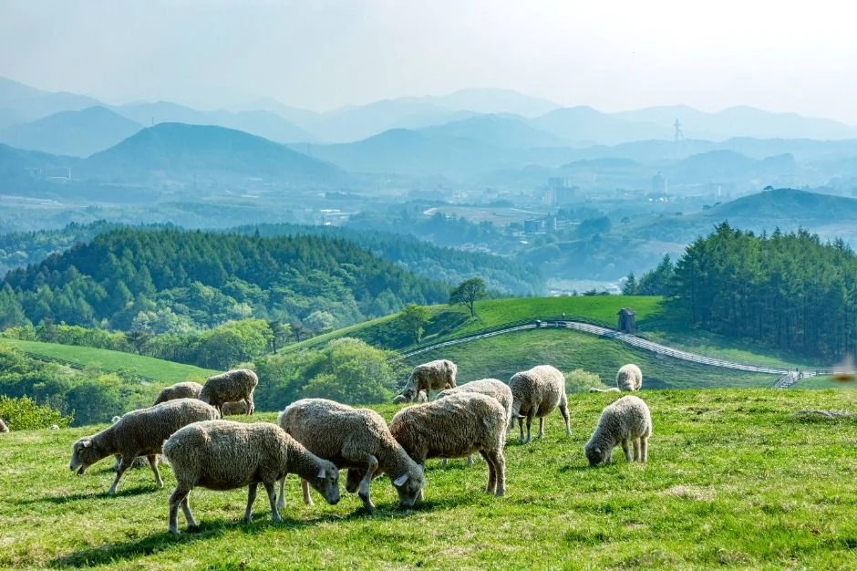
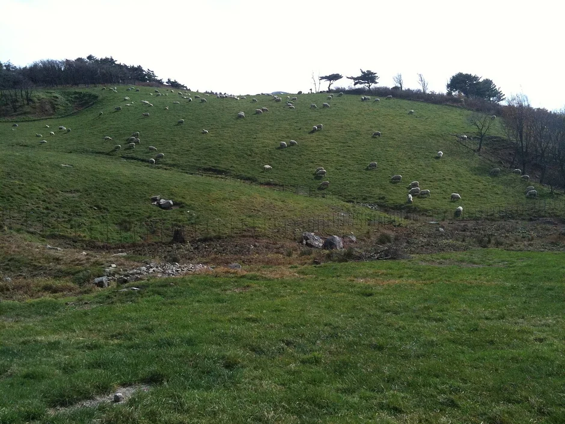
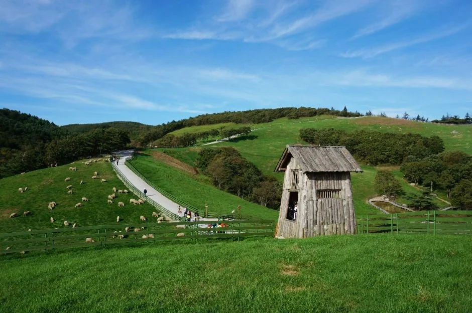
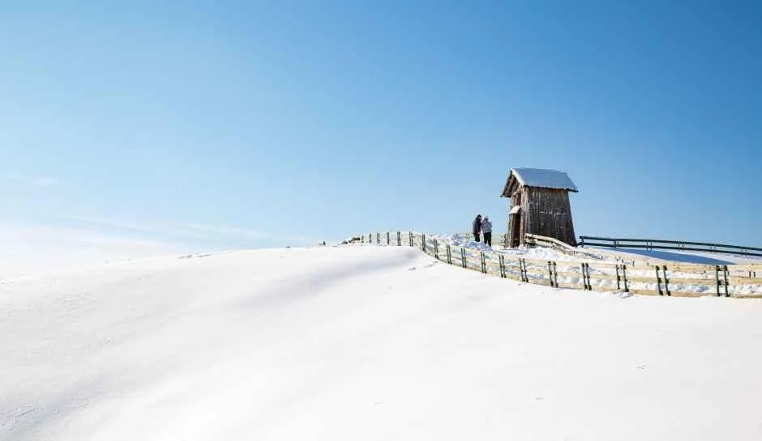
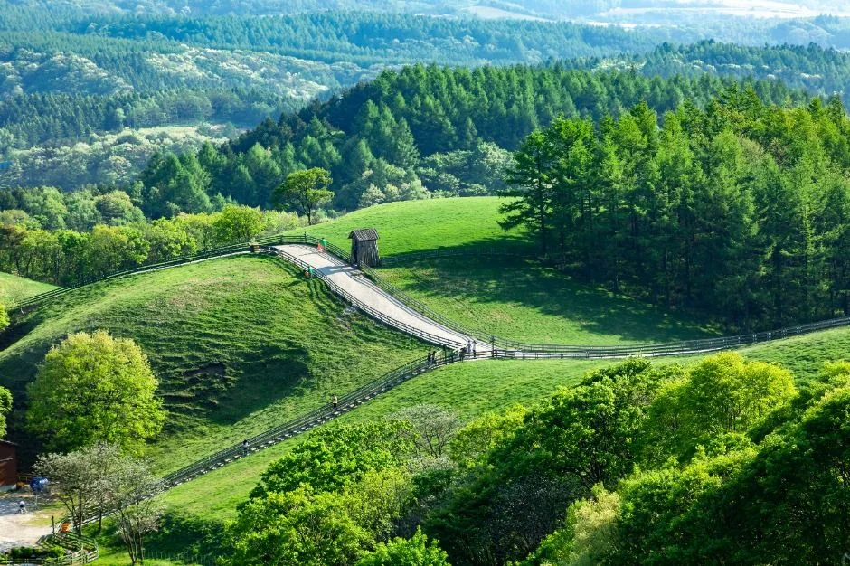
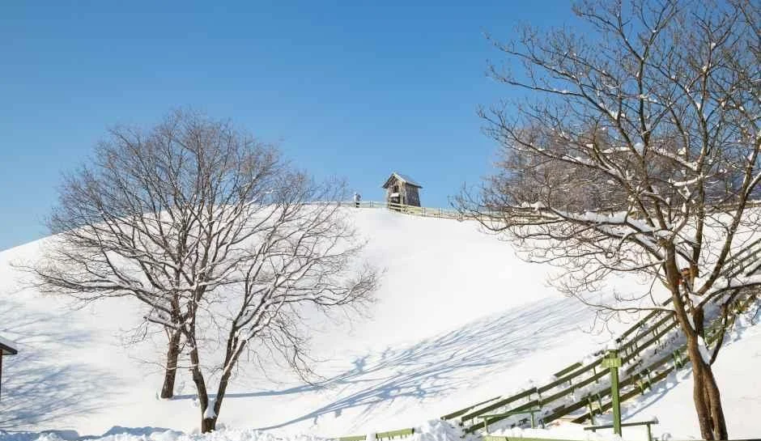
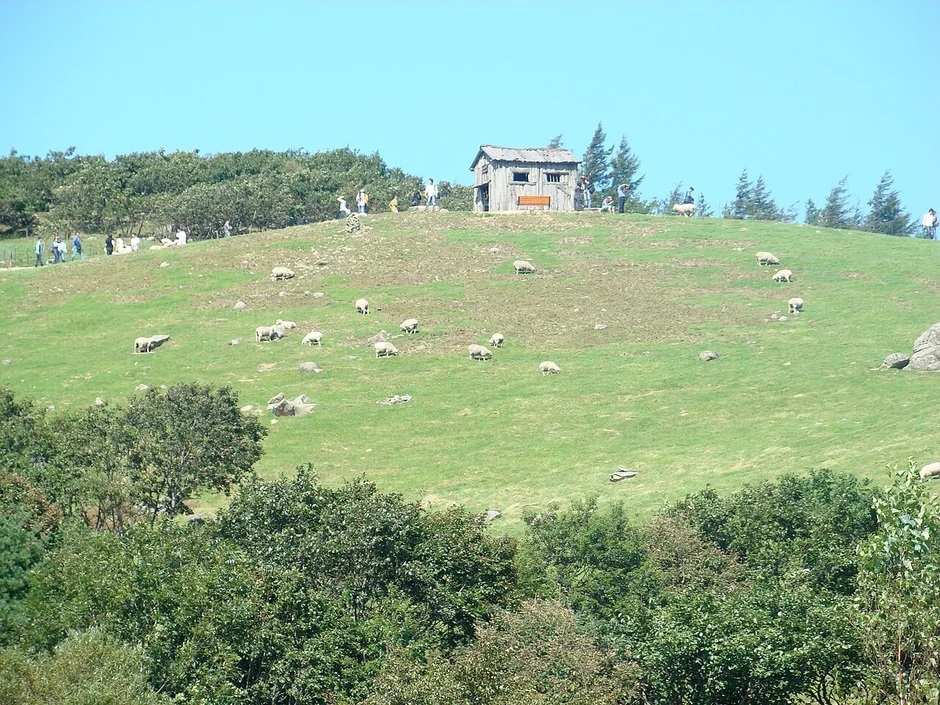
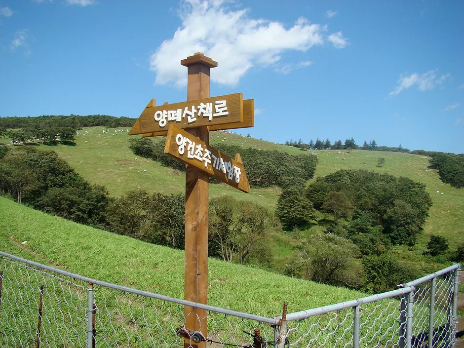
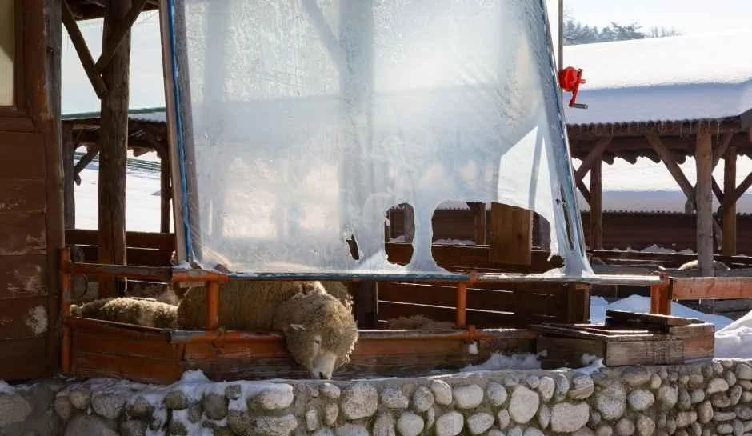

▲ 눈이 쌓인 대관령양떼목장 산책로. 겨울에는 매표 마감이 오후 4시로 앞당겨진다
2026년 10월 16일 현재, 대관령양떼목장 공식 누리집이 안내하는 오늘 매표 시간은 오전 9시부터 오후 4시 30분이다. 그런데 보름 뒤인 11월 1일부터는 매표 마감이 오후 4시로 30분 더 당겨진다. 양을 풀어놓는 방목은 10월 말까지로 안내돼 있어, 지금은 '초원의 양'과 '눈 덮인 능선'이 갈리는 길목이다. 그 갈림길에서 입장료, 계절별 시간표, 휴무일, 산책로, 눈길 진입 때 챙길 것을 공식 자료 위주로 정리했다.
💡 먼저 결론
개인 입장료는 대인 9,000원·소인 7,000원·우대 6,000원이다(공식 요금 안내 기준). 11월 1일부터 매표 마감은 오후 4시, 폐장은 오후 5시다. 공지된 휴무일은 설·추석 당일이며 2026년에는 2월 17일과 9월 25일이었다. 대관령 첫눈의 평년 날짜는 공식 자료에서 확인하지 못해 이 글에서는 단정하지 않는다. 내용은 2026년 10월 16일 기준이다.
1. 지금 시기의 목장 — 양은 어디에 있을까

▲ 목초지에서 풀을 뜯는 양 떼. 방목은 5월 중순부터 10월 말까지다 사진=한국관광공사
한국관광공사 대한민국 구석구석의 소개에 따르면 이 목장은 1989년 첫 축사를 지었고 1991년 면양을 들여왔으며, 양은 초지에 풀이 자라는 5월 중순부터 10월 말까지 방목되고 겨울에는 축사 안에서 지낸다. 2026년에는 4월 말까지 얼음이 어는 날씨 탓에 목초 성장이 늦어져, 목장이 4월 30일 공지로 임시 방목 일정을 알렸다. 5월 1일(금)은 오전 11시~오후 3시, 5월 2~5일은 오전 10시~오후 5시, 5월 6일 이후에는 매일 오전 11시~오후 3시였고, 당일 날씨와 양의 컨디션에 따라 사전 예고 없이 중단·취소될 수 있다는 단서가 붙었다. 그러니 10월 중순 이후 방문은 날씨에 따라 초지의 양을 볼 수도, 축사의 양을 볼 수도 있다. 올해 방목 종료일을 알리는 공지는 확인되지 않았다.
눈이 내리면 풍경은 완전히 바뀐다. 산책로가 눈에 덮이고 능선의 낙엽송 가지에 서리가 얹힌다. 다만 대관령의 첫눈 평년 날짜는 기상청 자료로 확인하지 못했다. 이 사이트의 첫눈 시기 기사는 대관령 같은 고지대는 10월 말~11월 중순에 눈이 관측되는 경우가 많다고 설명하지만, 올해 예측은 아니므로 방문 직전 기상청 날씨누리의 대관령(지점 100) 관측과 예보를 보고 정하는 편이 안전하다.
기상청 날씨누리 과거관측에서 대관령 일별자료 확인 가능
▲ 2010년 10월 26일 촬영된 대관령양떼목장. 풀빛이 바래기 시작하는 10월 말 초지에는 양 떼가 흩어져 있다 사진=Twchoi1 / Wikimedia Commons (CC BY-SA 3.0)
| 시기 | 양의 위치 | 참고 |
|---|---|---|
| 5월 중순 ~ 10월 말 | 초지 방목(날씨·컨디션에 따라 중단 가능) | 한국관광공사 안내. 2026년은 5월 1일 임시 방목으로 시작 |
| 11월 이후 ~ 이듬해 봄 | 축사 생활 | 겨울에는 축사 안에서 지낸다고 안내 |
| 눈이 내린 날 | 산책로·능선이 설경으로 변함 | 첫눈 평년 날짜는 공식 자료 미확인 |

▲ 방목기 초지의 산책로와 나무 움막. 산책로 초입의 움막은 목장의 상징으로 소개된다 사진=한국관광공사
2. 입장료 — 공식 요금표는 이렇다
목장 공식 누리집의 요금 안내 페이지에는 개인과 단체 요금이 나뉘어 있다. 네이버와 클룩에서 미리 예매하면 할인이 된다고 적혀 있고, 예매는 한 번에 최대 9매까지 가능하다. 할인율은 공식 페이지에 적혀 있지 않았다. 블로그에는 7,000원·6,000원 등 옛 요금이 아직 많이 돌아다니는데, 2026년 10월 16일 확인한 공식 요금은 아래와 같다.
| 구분 | 대인 | 소인 | 우대 |
|---|---|---|---|
| 개인 | 9,000원 | 7,000원 | 6,000원 |
| 단체(30인 이상) | 7,000원 | 5,000원 | 6,000원 |
건초 먹이 주기 체험은 목장 안 체험장에서 입장객이 함께하는 프로그램으로 소개돼 왔다. 그러나 현재 요금 안내 페이지에는 먹이 주기 체험비 항목이 따로 없다. 별도 체험비가 있는지는 확인되지 않았으니 현장 안내를 따르면 된다.
대관령양떼목장 공식 누리집에서 요금 확인 가능3. 운영 시간 — 11월 1일부터 30분 짧아진다

▲ 눈이 쌓인 능선 위 움막과 울타리. 겨울에는 매표 마감이 오후 4시로 앞당겨진다 사진=한국관광공사
이 목장은 해마다 매월 1일 전후로 관람시간을 30분씩 조정한다. 아래는 2026년 공식 공지로 확인된 매표 마감 시각이다. 운영 시작은 오전 9시이고, 매표가 끝나면 입장할 수 없다. 6~8월 값은 5월 1일 연장 공지(매표 마감 17:30)와 9월 1일 단축 공지의 '기존 17:30' 표기에서 추정한 것이다. 공식 공지사항 목록에 5월 1일과 9월 1일 사이 시각을 바꾼 공지가 없는 점은 확인했다.
| 적용일 | 매표 마감 | 폐장 | 근거 |
|---|---|---|---|
| 3월 1일 | 16:30 | 17:30 | 3월 1일 연장 공지 |
| 4월 1일 | 17:00 | 18:00 | 4월 1일 연장 공지 |
| 5월 1일 | 17:30 | 18:30 | 5월 1일 연장 공지(8월까지 변경 공지 미확인) |
| 9월 1일 | 17:00 | 18:00 | 9월 1일 단축 공지 |
| 10월 1일(현재) | 16:30 | 17:30 | 10월 1일 단축 공지 |
| 11월 1일 | 16:00 | 17:00 | 11월 1일 단축 공지(10월 10일 게시) |
11월부터 2월까지의 매표 마감은 오후 4시다. 2025년 11월 3일 단축 공지가 같은 시각이었고, 2026년 3월 1일 연장 공지가 '기존 16시'로 적혀 있기 때문이다. 한국관광공사 데이터에는 이용 시간이 '기상 변동으로 상이함'이라고만 적혀 있어, 폭설이나 강풍 때 임시 변경될 수 있다. 출발 전 공식 공지 게시판이나 전화(033-335-1966)로 확인하자.
대관령양떼목장 공식 공지사항에서 관람시간 확인 가능4. 산책 코스 — 1.2km, 해발 920m 정상까지

▲ 능선을 따라 오르는 산책로. 중간 지점이 목장에서 가장 높은 곳이다 사진=한국관광공사
한국관광공사 안내에 따르면 목장의 즐길 거리는 크게 산책로 걷기와 먹이 주기 체험 두 가지다. 산책로 초입에는 나무 움막이 있고, 산책로 중간 지점이자 목장 정상인 해발 920m에서는 백두대간 능선이 내려다보인다. 산책로 전체 길이 1.2km와 '오르막이 있어 40분가량'이라는 수치는 한국관광공사 구석구석의 2015년 여행기사 기준이다. 공식 누리집에는 코스 거리·시간이 적혀 있지 않아 단일 출처이며, 사진 촬영과 먹이 주기를 곁들이면 1시간 안팎을 잡는 편이 현실적이다.
| 항목 | 내용 | 출처 |
|---|---|---|
| 전체 길이 | 약 1.2km | 구석구석 여행기사(2015) |
| 소요 시간 | 걷기만 40분 안팎 | 구석구석 여행기사(2015) |
| 최고 지점 | 해발 920m, 산책로 중간 지점 | 한국관광공사 개요 |
| 체험 | 목장 중간 먹이 주기 체험장 | 구석구석 여행기사(2015) |
▲ 눈이 쌓이면 산책로 전체가 하얗게 덮인다. 길이 미끄러우니 걷는 시간은 평소보다 길어진다 사진=한국관광공사
목장이 내놓는 공식 안내에서 눈길에 관한 별도 기준은 확인되지 않았다. 다만 방목 일정 공지에 '날씨에 따라 사전 예고 없이 중단·취소될 수 있다'는 단서가 붙는 만큼, 눈이나 강풍이 예보된 날은 양을 초지에서 보지 못할 가능성도 열어 두는 편이 낫다. 눈이 쌓인 날에는 미끄럼 방지 신발과 장갑, 방한 모자를 챙기는 쪽이 낫다. 매표 마감이 4시로 당겨지는 11월 이후에는 해가 일찍 지므로, 산책 시간을 감안해 오후 3시 이전 도착을 권한다.

▲ 눈 덮인 언덕과 앙상한 나무. 눈이 온 뒤에는 계단과 울타리 주변이 미끄럽다 사진=한국관광공사

▲ 2007년 9월 9일 촬영된 능선 움막과 양 떼. 초가을 산책로는 이렇게 열린 초지를 가로지른다 사진=Taehoon Kang / Wikimedia Commons (CC BY 2.0)

▲ 산책로 갈림길의 '양떼산책로' 이정표(2007년 9월 촬영). 현재 표지와는 다를 수 있다 사진=Taehoon Kang / Wikimedia Commons (CC BY 2.0)
5. 휴무일과 주차 — 확인된 것과 아닌 것
공식 공지로 확인되는 휴무는 설과 추석 당일이다. 2026년에는 2월 17일(설)과 9월 25일(추석 당일)이 휴무였고, 9월 24일과 26일은 정상 운영했다. 한국관광공사 데이터의 휴무일 항목도 '설·추석 당일'이다. 이 밖의 정기 휴관일은 공식 자료에 없다. 올해 공지는 설(2월 17일) 15일 전인 2월 2일, 추석(9월 25일) 18일 전인 9월 7일에 올라왔고, 설 공지에는 '당일을 제외하면 정상 관람 및 체험이 가능하다'고 적혀 있었다. 이후 휴무일은 해당 명절 전에 올라오는 공지로 확인하면 된다.
| 항목 | 확인 내용 | 비고 |
|---|---|---|
| 정기 휴관일 | 공식 자료에 없음 | 한국관광공사 휴무일: 설·추석 당일 |
| 2026 설·추석 | 2월 17일, 9월 25일 휴무 | 공식 공지 게시 |
| 주차 | 가능(한국관광공사 데이터) | 요금·면수·혼잡 정도는 공식 자료에서 확인되지 않음 |
| 주소·문의 | 평창군 대관령면 대관령마루길 483-32 / 033-335-1966 | 공식 누리집 |
| 서울 기점 소요 시간 | 공식 자료에서 확인되지 않음 | 내비게이션 실시간 값 사용 |
블로그에는 '주차 무료'라는 글이 많지만 공식 자료로 뒷받침되지 않아 이 글에서는 쓰지 않는다. 눈이 온 주말에는 대관령 일대 진입로가 막힐 수 있으니, 주차는 현장 안내원 지시를 따르는 것이 확실하다.
6. 눈길 진입 — 체인과 타이어는 출발 전에 정한다
▲ 눈 덮인 대관령 능선. 고지 초원이라 평지보다 눈이 빨리 쌓일 수 있다 사진=한국관광공사
목장은 백두대간 능선 가까운 고지대(산책로 정상 해발 920m)라 평지에 비가 와도 눈이 내릴 수 있다. 영동고속도로·대관령 방면의 현재 체인 의무 구간과 통제는 도로공사와 강원도 공식 채널의 실시간 공지로 확인해야 하는데, 이번 조사에서는 2026년 겨울 시즌 기준의 공식 구간 안내를 찾지 못했다. 그래서 구간을 단정하지 않고, 출발 전 확인 방법만 안내한다.
- 출발 전: 한국도로공사 로드플러스(교통정보)와 기상청 대관령 예보 확인
- 차량: 체인 사용 규정과 장착 요령은 'CHAINS REQUIRED' 체인 기사, 겨울용 타이어 교체 시점은 겨울용 타이어 기사를 참고
- 일정: 눈이 예보된 날에는 매표 마감 4시를 감안해 일찍 출발해 일몰 전에 내려오기
7. 삼양목장과 헷갈리지 않기

▲ 눈 내린 겨울에는 양들이 축사에서 지낸다. 이 시기 방문하면 축사 안 양을 만나게 된다 사진=한국관광공사
같은 대관령의 큰 목장인 삼양목장(삼양라운드힐)은 셔틀버스와 풍력발전기 풍경이 중심이고, 양떼목장은 걸어서 도는 1.2km 산책로와 먹이 주기가 중심이다. 삼양목장의 요금·셔틀은 대관령 삼양목장 기사에서 따로 다뤘다. 하늘목장은 이 사이트에 별도 기사가 없어 링크하지 않는다. 두 곳을 한 번에 묶으려면 각 목장의 마감 시각이 다르니, 양떼목장은 매표 마감이 짧은 겨울에 먼저 들르는 일정이 안전하다.
▲ 능선에서 내려다본 설경. 날이 맑으면 멀리까지 조망이 열린다 사진=한국관광공사
✅ 대관령양떼목장 방문 전 체크리스트(2026.10.16 기준)
· 개인 입장료 대인 9,000원, 소인 7,000원, 우대 6,000원
· 11월 1일부터 매표 마감 16:00, 폐장 17:00(현재는 16:30/17:30)
· 휴무는 설·추석 당일, 방목은 5월 중순~10월 말
· 산책로 1.2km·약 40분은 단일 출처(2015)
· 눈 예보 시 체인·겨울용 타이어 준비, 공식 공지 게시판 확인
8. 정리
대관령양떼목장 개인 입장료는 대인 9,000원, 소인 7,000원, 우대 6,000원이고, 11월 1일부터 매표 마감이 오후 4시로 당겨진다. 휴무는 설·추석 당일로 공지돼 왔으며, 방목은 5월 중순~10월 말이라 눈 덮인 겨울에는 양이 축사에 있다.
주차 요금, 서울 기점 소요 시간, 대관령 첫눈 평년 날짜, 현재 체인 의무 구간은 공식 자료에서 확인하지 못했다. 산책로 1.2km·40분도 2015년 한국관광공사 기사 한 곳에서만 확인된 값이다. 이 글은 2026년 10월 16일까지 확인한 내용이다.